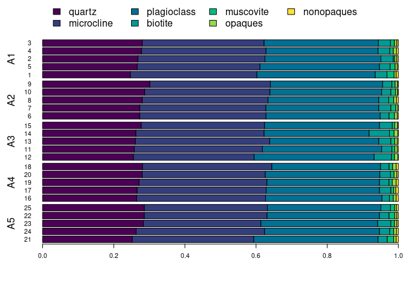

Overview
Exploration and analysis of compositional data in the framework of Aitchison (1986). nexus provides tools for chemical fingerprinting and source tracking of ancient materials. This package provides methods for compositional data analysis:
- Logratio transformations:
transform_lr(),transform_clr(),transform_alr(),transform_ilr(),transform_plr(). - Compositional statistics.
- Zero and missing value replacement.
- Outlier detection:
outliers().
This package also includes methods for provenance studies:
- Multivariate analysis:
pca(). - Mixed-mode analysis using geochemical and petrographic data (Baxter et al. 2008):
mix().
isopleuros is a companion package to nexus that allows to create ternary plots.
To cite nexus in publications use:
Frerebeau N, Philippe A (2024). _nexus: Sourcing Archaeological
Materials by Chemical Composition_. Université Bordeaux Montaigne,
Pessac, France. doi:10.5281/zenodo.10225630
<https://doi.org/10.5281/zenodo.10225630>, R package version
0.2.0.9000, <https://packages.tesselle.org/nexus/>.
A BibTeX entry for LaTeX users is
@Manual{,
author = {Nicolas Frerebeau and Anne Philippe},
title = {{nexus: Sourcing Archaeological Materials by Chemical Composition}},
year = {2024},
organization = {Université Bordeaux Montaigne},
address = {Pessac, France},
note = {R package version 0.2.0.9000},
url = {https://packages.tesselle.org/nexus/},
doi = {10.5281/zenodo.10225630},
}
This package is a part of the tesselle project
<https://www.tesselle.org>.Installation
You can install the released version of nexus from CRAN with:
install.packages("nexus")And the development version from GitHub with:
# install.packages("remotes")
remotes::install_github("tesselle/nexus")Usage
nexus provides a set of S4 classes that represent different special types of matrix. The most basic class represents a compositional data matrix, i.e. quantitative (nonnegative) descriptions of the parts of some whole, carrying relative, rather than absolute, information (Aitchison 1986).
It assumes that you keep your data tidy: each variable must be saved in its own column and each observation (sample) must be saved in its own row.
These new classes are of simple use as they inherit from base matrix (see vignette("nexus")):
## Mineral compositions of rock specimens
## Data from Aitchison 1986
data("hongite")
head(hongite)
#> A B C D E
#> H1 48.8 31.7 3.8 6.4 9.3
#> H2 48.2 23.8 9.0 9.2 9.8
#> H3 37.0 9.1 34.2 9.5 10.2
#> H4 50.9 23.8 7.2 10.1 8.0
#> H5 44.2 38.3 2.9 7.7 6.9
#> H6 52.3 26.2 4.2 12.5 4.8
## Coerce to compositional data
coda <- as_composition(hongite)
head(coda)
#> <CompositionMatrix: 6 x 5>
#> A B C D E
#> H1 0.488 0.317 0.038 0.064 0.093
#> H2 0.482 0.238 0.090 0.092 0.098
#> H3 0.370 0.091 0.342 0.095 0.102
#> H4 0.509 0.238 0.072 0.101 0.080
#> H5 0.442 0.383 0.029 0.077 0.069
#> H6 0.523 0.262 0.042 0.125 0.048nexus allows to specify whether an observation belongs to a specific group (or not). Additionally, the presence of repeated measurements can be specified by giving several observations the same sample name:
## Mineral compositions of five slides as reported by five analysts
## Data from Aitchison 1986
data("slides")
head(slides)
#> analyst slide quartz microcline plagioclass biotite muscovite opaques
#> 1 A1 A 24.7 35.6 33.3 3.3 2.0 0.6
#> 2 A1 B 26.8 35.7 32.6 3.5 0.4 0.6
#> 3 A1 C 28.0 34.2 32.1 3.4 1.1 0.7
#> 4 A1 D 27.8 35.0 31.5 3.3 1.0 0.9
#> 5 A1 E 26.6 34.5 33.6 3.0 1.4 0.6
#> 6 A2 A 27.3 35.5 32.1 2.5 1.5 0.8
#> nonopaques
#> 1 0.6
#> 2 0.4
#> 3 0.4
#> 4 0.5
#> 5 0.3
#> 6 0.3
## Coerce to compositional data
coda <- as_composition(slides, sample = 2, group = 1)
describe(coda)
#> 25 compositions with 7 parts:
#> * 5 unique samples.
#> * 25 replicated observations.
#> * 5 groups: "A1", "A2", "A3", "A4", "A5".
#> * 0 unassigned samples.
#>
#> Data checking:
#> * 0% of values are zero.
#> * 0 parts with no variance.
#>
#> Missing values:
#> * 0 compositions (0%) containing missing values.
#> * 0 parts (0%) containing missing values.
## Grouped compositional barplots
barplot(coda, order = 1)
Contributing
Please note that the nexus project is released with a Contributor Code of Conduct. By contributing to this project, you agree to abide by its terms.